kefu 把全渠道接待、知识库 RAG、AI 代理与流程机器人、工单 CRM、路由排班、报表销售、白牌转售,收进一套可自部署、支持 16 种语言的平台。以下皆为真实产品截图。
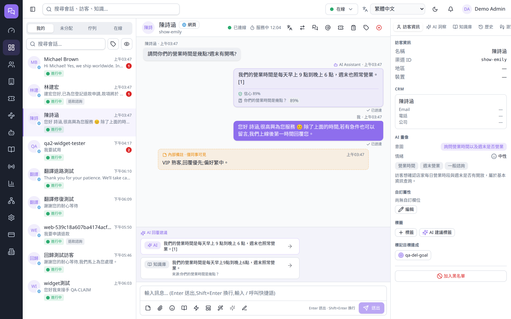
网站挂件、Telegram、WhatsApp、Email、Facebook 汇入同一个收件箱,跨渠道统一访客身份与回覆。一行嵌入码即可上线网站客服。
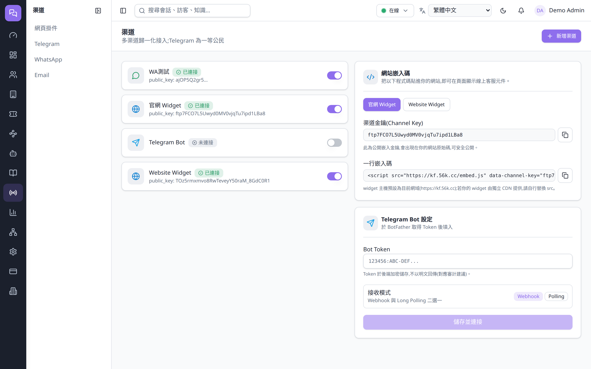
不是套壳的 AI。RAG 依你的内容作答并附来源,信心低于门槛自动转真人;可视化流程机器人自动接管常见问题。
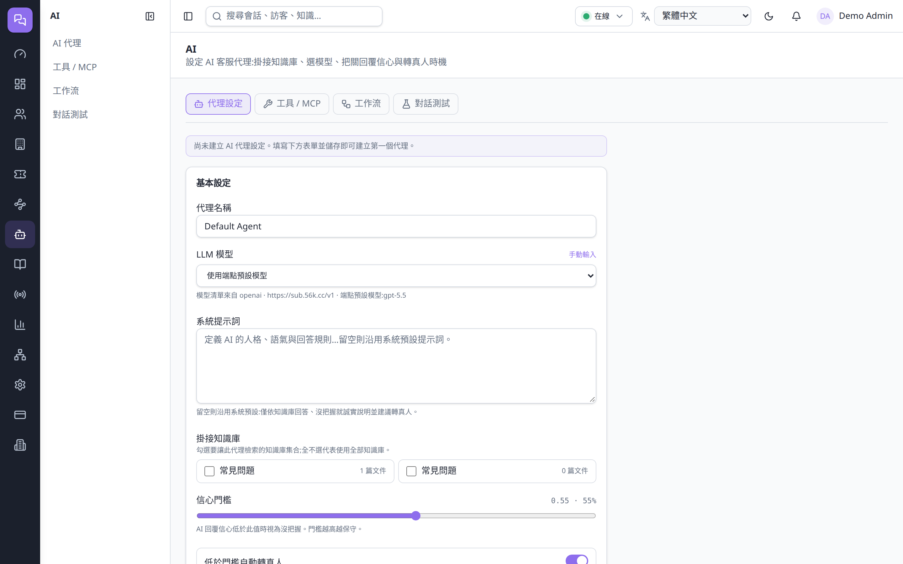
运营报表、满意度 CSAT、AI 洞察;目标与销售追踪把成交归因到坐席,含业绩排行榜,支持 CSV 导出。
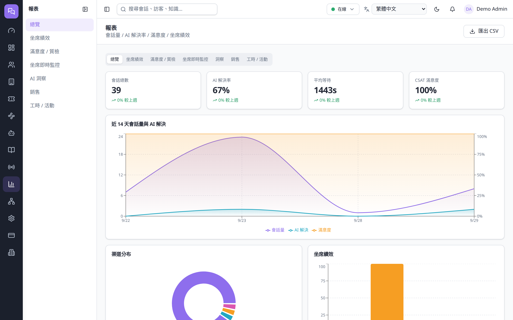
所有整合皆由我们自研并集成进市集,按租户以开关控制、依需填入金鑰即可启用 —— 无需自己写对接。
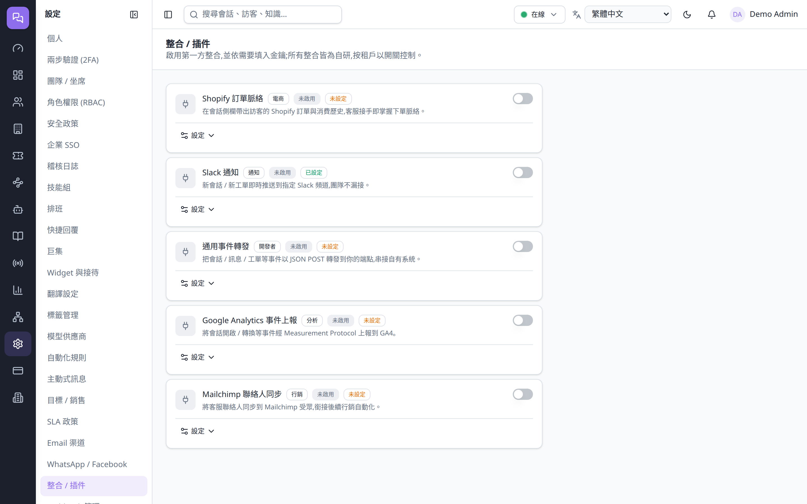
角色权限(RBAC)细到每个操作码,搭配 2FA、企业 SSO(SAML / Google)、稽核日志、营业时间感知 SLA 与机敏加密,满足企业与白牌转售的合规要求。
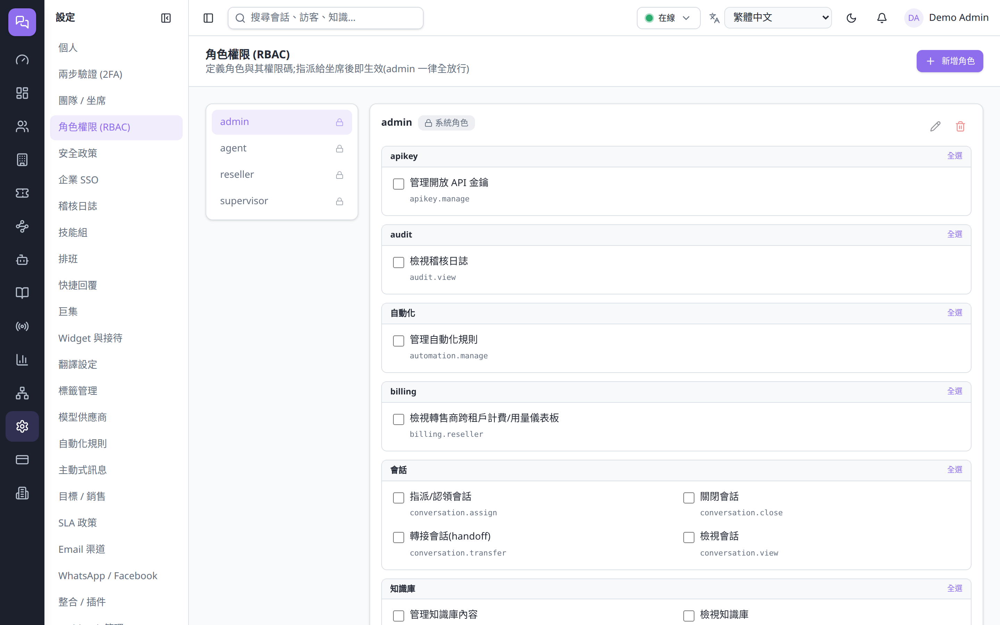
同一套工作台打包成原生 App:桌面端常驻系统托盘、角标显示未读;手机端有专为单手操作设计的界面,访客资料以底部抽屉呈现。首次打开填入服务器地址即可登录。
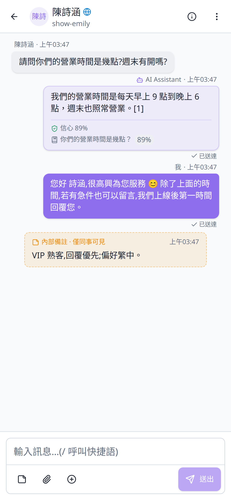
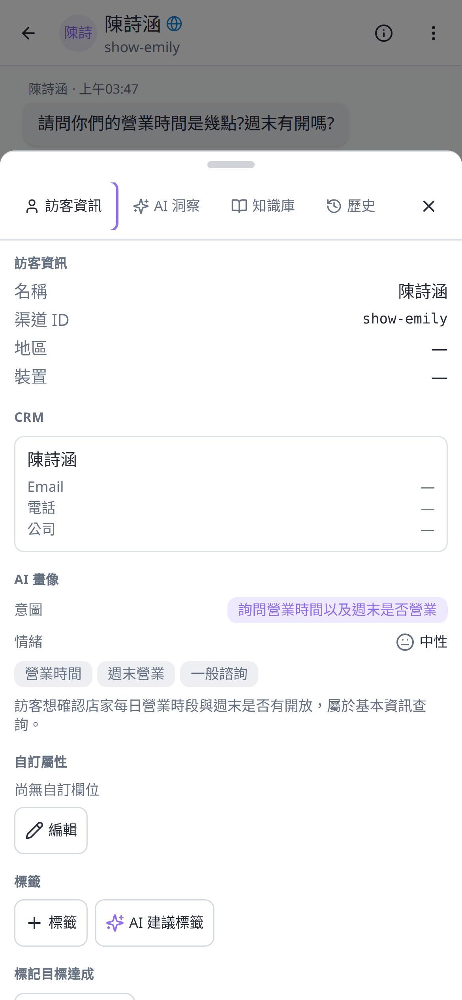
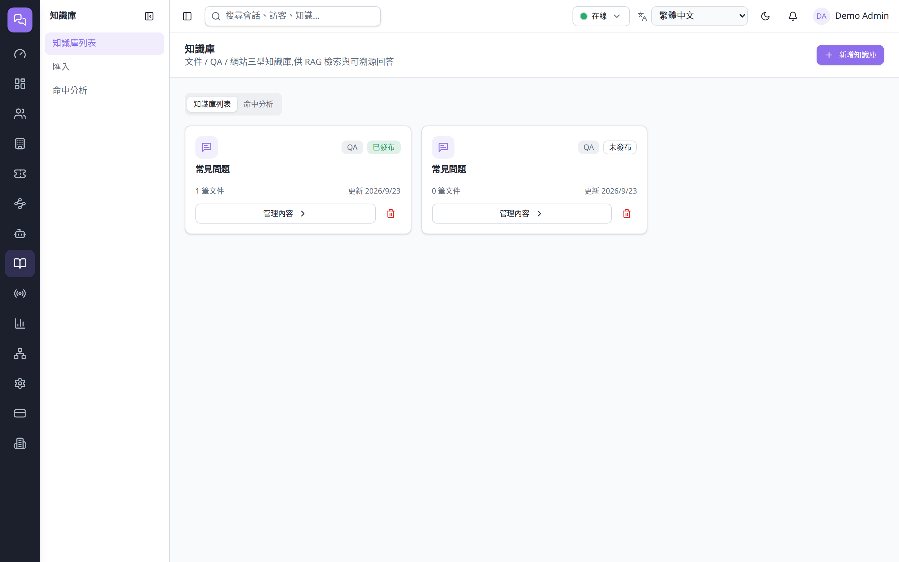
文件 / QA / 网站三型知识库,供 AI 检索与可溯源回答。
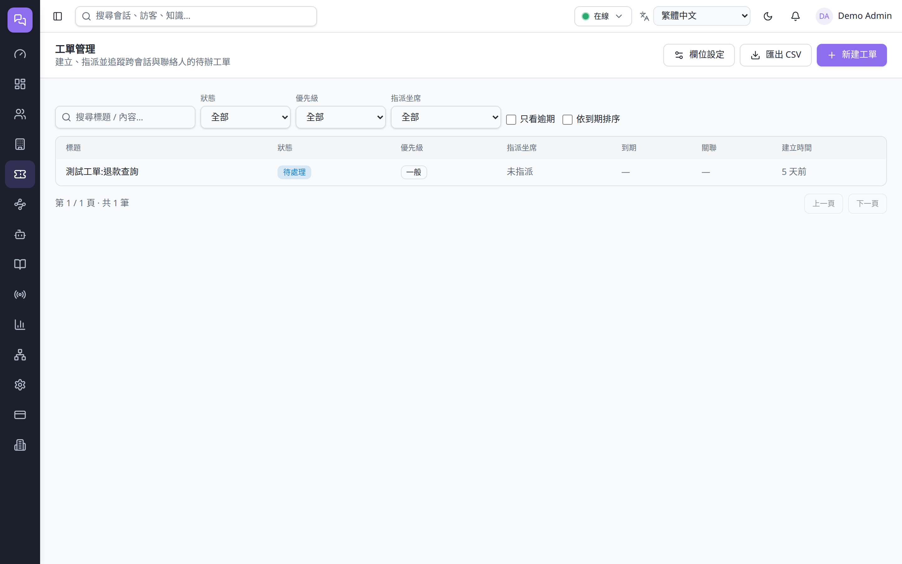
工单状态机、联系人 / 公司(B2B),会话一键转工单。
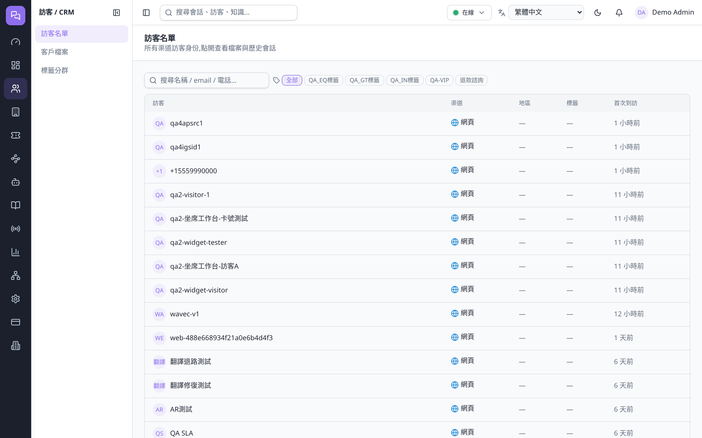
访客名单、客户档案与标签分群,统一访客身份。
工单状态机、联系人 / 公司(B2B)、营业时间感知 SLA 与违约告警。
负载均衡 / 轮询 / 手动派单、技能组、时区感知排班并联动派单。
条件触发自动化规则、主动式讯息、eye-catcher 诱饵气泡。
贴自己品牌转售、下游一键开通、自订网域、独立计费。
RBAC、2FA、SSO、稽核日志、机敏加密、SSRF 防护、固定时间比对。
开放 API、Webhook、Docker 一键自部署,数据自主可控。
RAG 反幻觉、信心门槛转人、流程机器人从设计之初就内建。
多租户、贴牌转售、自订网域与品牌,不只是「用」而是「卖」。
Docker 自部署,资料自主可控,不锁定第三方云。
16 种介面语言含 RTL、即时双向翻译,一个团队服务全世界。
现在就进入平台亲手试一试,或看看它的即时运行现况。